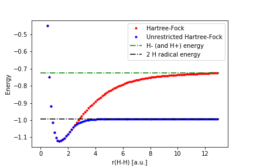

Installation and running¶
Installation¶
This part assume that the non-legacy version of SlowQuant is working.
The additional python packages can now be installed by:
conda install cython
The gcc compiler can be installed by:
sudo apt-get install gcc
Inside the SlowQuant folder run:
python setup_legacy.py build_ext --inplace
To test the installation install run:
pytest tests_legacy.py
All of the tests should succeed.
The legacy code of the program is run as:
python SlowQuant_legacy.py MOLECULE SETTINGS
See test files for examples of input files, or read “Example input files” under “Legacy documentation”
Example input files¶
10;;;
1;1.63803684;1.136548823;0
8;0;-0.143225817;0
1;-1.63803684;1.136548823;0
Example of inputfile. The molecule is water.
Hartree-Fock calculation¶
basisset;3-21G
Initial Method;HF
Example of settingsfile. Performs a Hartree-Fock calculation with the basisset 3-21G
MP2 calculation¶
basisset;3-21G
Initial Method;HF
MPn;MP2
Example of settingsfile. Performs a MP2 calculation with the basisset 3-21G
Geometry optimization¶
basisset;STO3G
Initial Method;HF
GeoOpt;Yes
Example of settingsfile. Performs a geometry optimization calculation with the basisset STO3G
BOMD simulation¶
basisset;3-21G
Initial method;BOMD
SCF Energy Threshold;1e-12
SCF RMSD Threshold;1e-12
steps;100
stepsize;1.0
SCF Max iterations;1000
Example of settingsfile. Perfoms a BOMD simulation of 100 steps, with a time step of 1.0 a.u.
List of keywords¶
Settings are given in the setting inputfile by using the below keywords. The order of the keywords in the setting inputfile does not matter at all.
- basisset;x
x=bassiset used in calculation. STO2G, STO3G, DZ, DZP, 3-21G, 6-31ppGss (6-31++G**), 6-31Gs (6-31G*), 6-31pGs (6-31+G*).
Integrals¶
- None
Initial Method¶
- Initial Method;x
Method to use during SCF. x=HF for Hartree-Fock calculation. x=UHF for unrestricted Hartree-Fock calculation.
- UHF mix guess;x
Mix initial coefficients to break spin symmetry
SCF¶
- SCF Energy Threshold;x
Threshold for convergence of the SCF, given as x
- SCF RMSD Threshold;x
Threshold for convergence of the SCF, given as x
- SCF Max iterations;x
Maximum SCF iterations
- DIIS;x
Activation of DISS, x=Yes
- Keep Steps;x
Number of steps saved in the DIIS algorithm
Properties¶
- Charge;x
Calculation of atomic charges. x=Mulliken gives Mulliken charges. x=Lowdin gives Lowdin charges.
- Dipole;x
Calculation of molecular dipolemomemnt. x=Yes for calculation.
- Excitation energy;x
Calculation of excitation energies. x=RPA for using TDHF/RPA.
Geometry Optimization¶
- GeoOpt;x
Turns on geometry optimization. x=Yes to turn it on. Only works for Hartree-Fock.
- Max iteration GeoOpt;x
Maximum geometry optimization steps.
- Geometry Tolerance;x
Tolerance for convergence, given as x
- Gradient Descent Step;x
Gradient scaling factor in Gradient Descent algorithm
- Force Numeric;x
Choose to evaluate Forces numerically. x=Yes to activate. Only works for Hartree-Fock.
Couple Cluster¶
- CC;x
To run CCSD, x=CCSD. To run CCSD(T), x=CCSD(T)
- CC Max iterations;x
Maximum CC amplitudes iterations.
- CC RMSD Threshold;10
RMSD Threshold for T1 and T2, given as x
- CC Energy Threshold;10
Energy change Threshold for CC, given as x
Ab-initio Molecular Dynamics¶
- stepsize;x
Integration stepsize for the movement of the nuclei.
- steps;20
Number of steps for the dynamics simulation
Illustrative calculations¶
Here some illustrative calculations can be seen
SCF with and without DIIS¶
The used geometry can be seen below:
10;;;
1;1.63803684;1.136548823;0
8;0;-0.143225817;0
1;-1.63803684;1.136548823;0
The used settings can be seen below:
basisset;6-31ppGss
DIIS;Yes
SCF Energy Threshold;1e-5
SCF RMSD Threshold;1e-5
basisset;6-31ppGss
DIIS;No
SCF Energy Threshold;1e-5
SCF RMSD Threshold;1e-5
First a SCF calculation was performed with DIIS enabled giving:
Iter Eel Etot dE rmsD DIIS
0 -134.1449183618 -126.1425513008
1 -61.4018313732 -53.3994643122 7.27430870e+01 1.37140022e+01
2 -82.1748278956 -74.1724608346 -2.07729965e+01 1.34573050e+01 7.81843771e-01
3 -83.5297539977 -75.5273869367 -1.35492610e+00 1.33204239e-01 7.81843771e-01
4 -84.0658119442 -76.0634448831 -5.36057946e-01 4.78581548e-02 7.81843771e-01
5 -84.0523274324 -76.0499603713 1.34845118e-02 8.49130680e-03 7.81843771e-01
6 -84.0148299835 -76.0124629225 3.74974488e-02 2.96875516e-03 7.81843771e-01
7 -83.9935874709 -75.9912204099 2.12425126e-02 1.76964818e-03 7.81843771e-01
8 -83.9947637830 -75.9923967219 -1.17631206e-03 2.26414594e-04 1.16112494e-01
9 -83.9947955055 -75.9924284444 -3.17225082e-05 1.66077078e-05 3.21096922e-02
10 -83.9948061725 -75.9924391115 -1.06670263e-05 6.54369763e-06 3.03280249e-03
Then a SCF calculation was performed without DIIS giving:
Iter Eel Etot dE rmsD
0 -134.1449183618 -126.1425513008
1 -61.4018313732 -53.3994643122 7.27430870e+01 1.37140022e+01
2 -104.9615819231 -96.9592148621 -4.35597505e+01 1.35548186e+01
3 -64.7628958717 -56.7605288107 4.01986861e+01 1.25781385e+01
4 -102.8062267026 -94.8038596416 -3.80433308e+01 1.25633760e+01
5 -65.5183313906 -57.5159643295 3.72878953e+01 1.23251505e+01
6 -102.3075211689 -94.3051541079 -3.67891898e+01 1.23221102e+01
7 -65.7017602918 -57.6993932308 3.66057609e+01 1.22666435e+01
8 -102.1836707293 -94.1813036683 -3.64819104e+01 1.22659169e+01
9 -65.7473338650 -57.7449668040 3.64363369e+01 1.22524386e+01
......
96 -102.1421225328 -94.1397554718 -3.63795182e+01 1.22477235e+01
97 -65.7626043489 -57.7602372879 3.63795182e+01 1.22477235e+01
98 -102.1421225328 -94.1397554718 -3.63795182e+01 1.22477235e+01
99 -65.7626043489 -57.7602372879 3.63795182e+01 1.22477235e+01
As it can bee seen the one with DIIS converges in 10 iterations, whereas without DIIS it never converges
Hartee-Fock H2 dissociation¶
Under the Hartree-Fock approximation the dissociation of dihydrogen can be considered. To investigate this the following geometry input was used:
2;;;
1;0.0;0.0;0.0
1;x;0.0;0.0
Here x is varied to make the dissociation curve. The following settings were used:
Initial method;HF
basisset;3-21G
and,
Initial method;UHF
basisset;3-21G
For x varried from 0.5 to 13 a.u. the following curve can be made:
For a script to calculate the curves see SlowQuant/data/notebooks/H2_dissociation_HF_vs_UHF_legacy.ipynb
It can be seen from the curve that (R)HF and UHF converges to two different values. By calculating H- and H radical it can be seen that RHF converges to H- and H+, whereas UHF converges towards 2x H radicals. This can be understood since RHF is a closed-shell method. When H2 dissociates it is expected that each hydrogen will be associated with one electron, this cannot be described with RHF. UHF can describe open-shells and therefore, seem to have a better description of the dissociation. UHF have other problems like spin contamination to be aware of.
Issues¶
In this section known problems with the code can be found
General¶
- No checking of input files at all at any stages of the code
- Basisset object has a bad structure
- Loops should be replaced with np.einsum() in many cases
- Documentation of integral code is out-of-date
Performance¶
- A lot of recalculations in R, when calculating higher order angular momentum integrals
- Not sure variables are passed around in integral code the right way with respect to Cython
- The SCF seem to have trouble converging if BOMD time steps are above 1.0 a.u.
- All information is stored directly in memory; Integrals scale as N^4 for memory
Need testing¶
- DCPT2 not tested, no case in paper, where cartesian integrals was used (all had D orbitals)
Broken¶
- Self overlap integrals is non-one for contracted basisfunctions
- No check for singularity in DIIS, H2/STO3G breaks the code if used with DIIS
- Changing Cython directive_defaults seem to make the code break sometimes, not very reproduceable